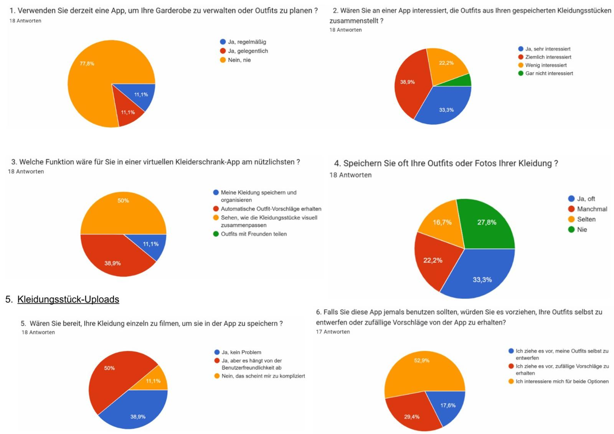

Project Background
FitMe is a conceptual mobile app that helps users manage their wardrobe digitally and create custom outfits from their existing clothing. The goal was to explore how digital tools can simplify everyday decisions like “What should I wear today?” by offering a functional, personalized, and intuitive experience.
Context
The project was part of a university Human-Computer Interaction (HCI) course focused on usability and user-centered design. It was carried out over several weeks and included ideation, research, paper prototyping, user testing, and interactive prototyping using Figma.
Process
- concept and feature definition
- User survey to understand needs and behaviors
- Development of a paper prototype
- Think-Aloud user testing
- Iterative improvements based on feedback
- Creation of an interactive Figma prototype
- Final testing and documentation

.jpeg)
Research
A questionnaire was distributed to potential users to gather insights on their wardrobe habits and expectations for such an app. Key findings included:
- Most had never used a similar app but showed strong interest
- High demand for outfit suggestions and easy item uploads
- Need for clear categorization and filtering of outfits
These insights guided design priorities and feature selection.
Design Goals
- Allow users to easily add and manage clothing items
- Enable intuitive outfit creation from existing wardrobe
- Offer a way to save, share, and download outfits
- Maintain a clean, minimalist and accessible interface
- Minimize cognitive effort for first-time users
Design Problems
- The “+” icon for adding clothing was not intuitive for all users
- It was unclear how to save an added item
- Icons in the outfit creation interface (back vs. close) caused confusion
- No visual confirmation after saving an outfit or a favorite
Design Decisions
- Added an explicit “Save” button after adding a clothing item
- Reworked the outfit creation flow for better clarity
- Improved icon labeling and layout
- Introduced a feedback message for successful saves
- Created an interactive Figma prototype to simulate real user interaction
Reflections
The project taught me the value of early user feedback and iterative testing. Even small usability issues can block an otherwise good experience. I learned to focus not only on visual design but also on interaction clarity, user expectations, and emotional satisfaction. In future iterations, I would consider integrating real-time outfit suggestions based on weather and user preferences, as well as stronger social sharing capabilities.